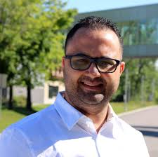
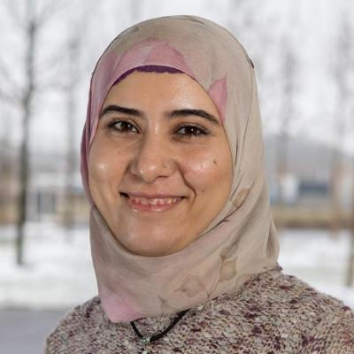
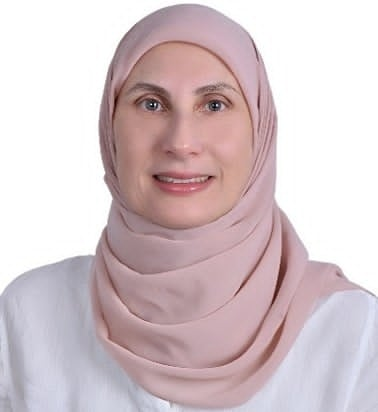
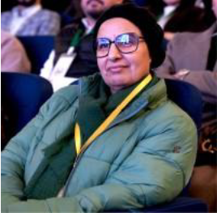
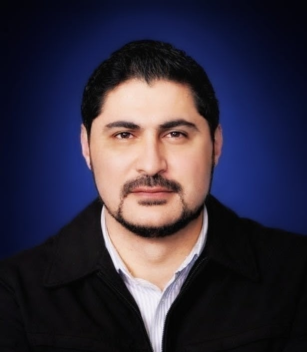

🎓 Plenary Speakers
Pr. Houari Sahraoui
Affiliation: Full Professor, Department of Software Engineering and IT, University of Montreal
Talk: "When "Correct" Is Not Enough: The Hidden Challenges of Generative AI in SE"

Pr. Ali Ouni
Affiliation: Full Professor, Department of Software Engineering and IT, École de technologie supérieure (ÉTS Montréal), University of Quebec
Talk: "From Automation to Autonomy: Reliability Promises and Challenges of Agentic AI in SE"
Pr. Zhou Minghui
Affiliation: Full Professor, Institute of Software, Peking University, China
Talk: "Software Compliance in Open-Source Ecosystem"

Dr. Fehmi Jaafar
Affiliation: Associate Professor, University of Quebec, Canada
Talk: "Securing the Future: The Role of Generative AI in Cyber Defense"

Dr. Sallam Abualhaija
Affiliation: Research Scientist, University of Luxembourg
Talk: "AI-Assisted Engineering of Regulatory-Compliant Software"
📚 Lecturers
Vincent Bureau
Affiliation: Data Compliance Expert, University of Quebec, Canada
Talk: "Software Compliance and Data Protection in the Era of AI"
Dr. Zhao Junfeng
Affiliation: Research Professor, Institute of Software, Peking University, China
Talk: "Rethinking LLM Application Development: Practices in Medical Domain-Specific Modeling"

Dr. Asma Sellami
Affiliation: Tenure-Track Assistant Professor ISIMS, Tunisia
Talk: "Towards Quantitative Quality Engineering for AI-Generated Software Systems"

Dr. Sihem Ben Sassi
Affiliation: Associate Professor, ENSI, Tunisia
Talk: "Open Source Licenses Discovering"
Dr. Ali Ben Mrad
Affiliation: Associate Professor, Qassim University, KSA
Talk: "AI for Soft. Quality & Evolution"

Dr. Mariem Zhioua
Affiliation: PMO at VERMEG Tunisia
Talk: "VERMEG: A Vision for AI"

Ing. Mohamed Tounsi
Affiliation: Senior Manager, Ex-VERMEG, Tunisia
Talk: "Building Bridges Between Academia and Industry"
Ilyes Ben Khalifa
Affiliation: Senior Data Scientist, Ominimo, Netherlands
Talk: "LARK: License Analysis with RAG & Knowledge Graphs"

Dr. Mohamed Wiem Mkaouer
Affiliation: Associate Professor, Graduate Program Director of Artificial Intelligence and Software Engineering, University of Michigan-Flint
Talk: "Bridging the Gap: AI-Driven Software Testing and Quality Assurance"

Dr. Montassar Ben Messaoud
Affiliation: Tenure-Track Assistant Professor, Tunis Business School, Tunisia
Talk: "Transforming Undergraduate Final Projects into Research Excellence"